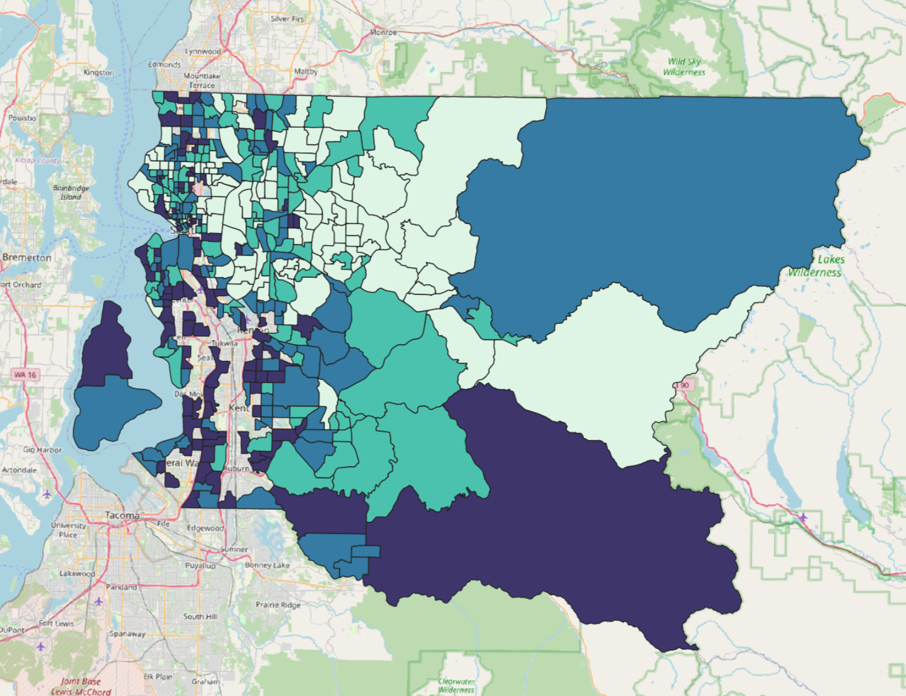
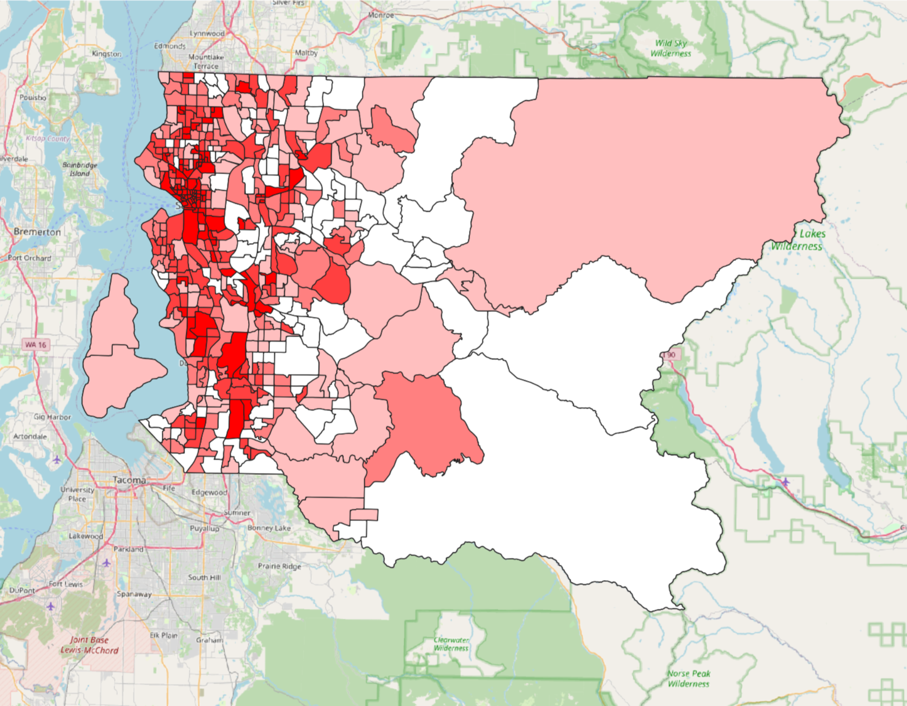

Project Summary
Seattle Transit Equity Dashboard
A geovisualization created by students at the University of Washington for GEOG 458. This dashboard explores the relationship between transit access, household income, and car ownership across Seattle's census tracts.
Using 2020 census boundaries and King County Metro data, it helps users identify transit deserts, neighborhoods where residents have limited access to public transit and face compounding barriers from low income or zero vehicle ownership.
Background
Why Transit Equity Matters
Access to public transportation is a foundational aspect of urban equity. In Seattle, rapid population growth and rising housing costs have pushed lower-income residents into neighborhoods further from job centers and often underserved by the transit network.
This project examines three key dimensions of transit equity: the density of transit stops per census tract, median household income, and the percentage of households without a vehicle. Together, these layers reveal where residents are most dependent on yet least served by public transit.
By making these patterns visible in an interactive format, we hope to support more informed public conversations about transportation investment, housing policy, and equitable urban planning in Seattle and the broader King County region.
Key Definition: Transit Desert
A transit desert is a geographic area where the supply of public transit service is insufficient relative to the demand, particularly among populations with limited transportation alternatives. In this dashboard, transit deserts are identified by cross-referencing low transit stop density with high rates of zero-vehicle households and lower median household incomes, highlighting where transit need is greatest and service is lacking.
Methodology & Data
How We Built This
The dashboard was built using Mapbox GL JS with three choropleth layers, each joined to 2020 Seattle census tract boundaries. Transit stop counts were computed via a spatial join between King County Metro stop point data and census tract polygons. Income and vehicle availability data came from the ACS 2024 5-Year Estimates.
To prepare the demographic data, King County ACS data for median income and vehicle access were cleaned and joined to census tract boundaries using the GEOID field, ensuring consistent alignment across all three layers. AI was used to assist with joining the census tract GeoJSON with transit stop points, and separately with household size by vehicles available data.

Joining median income data to census tracts via GEOID in King County.

Cleaning vehicle access data and joining to census tracts via GEOID.
Transit Stop Density
Stop counts per tract via spatial join of King County Metro stops with 2020 census boundaries. Sequential blue ramp, 5 classification breaks.
Median Household Income
ACS 2024 5-Year Estimates, field B19013_001E. Classified using Natural Breaks (Jenks). Sequential green ramp across 5 classes.
Car Ownership Rate
ACS 2024 5-Year Estimates, percentage of zero-vehicle households (B08201). Purple sequential ramp to highlight transit dependency.
Boundaries
2020 Census Tracts Seattle
2020 Census Tracts from Seattle Open Data GIS, clipped to Seattle city limits.
Transit
King County Metro Stops
Point GeoJSON of all Metro bus and light rail stops in the study area.
Demographics
ACS 5-Year Estimates
2024 ACS data for income (B19013) and vehicle availability (B08201).
Base Map
Mapbox light-v11
Minimalist base style to keep thematic layers visually prominent.
Tutorial
How to Use the Dashboard
1
Toggle Layers On and Off
Use the checkboxes in the sidebar to turn the Income, Car Ownership, and Transit Stop Density layers on or off independently. The legend on the right updates automatically to reflect which layers are active.
2
Zoom In to a Census Tract
Zoom into the map to get a closer look at individual census tracts. Clicking on a tract will populate the sidebar on the left with that tract's transit stop count, median household income, and percentage of households with no vehicle.
3
View the Chart
The transit need by tract chart only updates when you fully zoom in to a specific census tract. Clicking on a tract without fully zooming in will show the range of transit need across all tracts rather than the selected tract's specific data.
4
Zoom & Pan
Use the zoom controls in the top-right or scroll to zoom in and out. Click and drag to pan across Seattle's neighborhoods.
5
Reset the Map
Click the Reset button in the sidebar to return to the default view, re-enable all layers, and clear any highlighted tracts or open popups.
When using the map you need to fully zoom in to a census tract to populate the chart with that specific tract's transit need. Clicking on a tract without fully zooming in will show the range of transit need across all tracts. You can also toggle on what layer you want to focus such as Median Income, % No Vehicle and Stop Density. The map also populates on the left hand side the number of transit stops, median income and % no vehicle.
Our Team
Meet the Developers
Katherine Escoto Licona
Geography: Data Science
Car ownership layer, data processing, layout
Shayla Guieb
Geography: Data Science
Transit stop density layer, map interactions, styling
👤
Oscar Castillo
Geography: Data Science
Income layer, GEOID data joins, data cleaning
👤
Jiali Deng
Geography: Data Science
Chart implementation, KPI panel, sidebar design
Acknowledgements
We would like to thank our course instructor and teaching assistant for their guidance and feedback throughout this project.
Dr. Bo Zhao
Course Instructor, GEOG 458
Liz Peng
Teaching Assistant, GEOG 458
Credits & References
Libraries & Sources
Built using Mapbox GL JS v2.15 for map rendering, C3.js and D3.js for charting, and Inter (Google Fonts) for typography. Census tract boundaries from Seattle Open Data GIS. Transit stop data from King County Metro's open data portal. The project is hosted on GitHub under an MIT license.
[4] Seattle Open Data GIS. (2020). 2020 Census Tracts - Seattle.